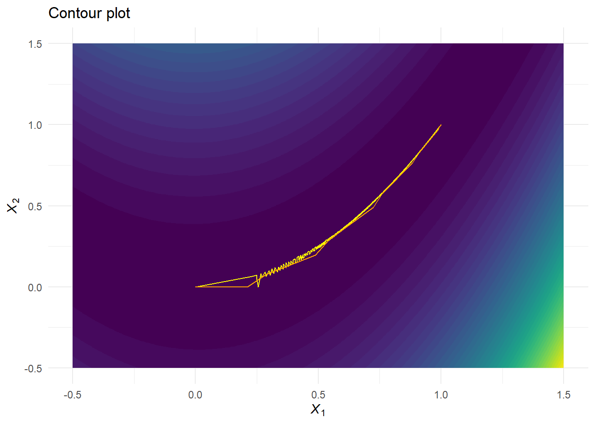

Chapter 2 on motivating problems is the first chapter that actually entails exercises.
6.1 Exercises (6.5 in the notes)
1. Suppose for every individual in a small pre-clinical study, it has been recorded how many epileptic seizures are observed (outcome \(y\)) and whether the individual is receiving a standard treatment (covariate \(x=0\)) or experimental medication (covariate \(x=1\)). The data are:
Subject \(i\)
Treatment \(x\)
# Seizures \(y\)
1
1
12
2
1
15
3
1
17
4
0
8
5
0
11
6
0
5
A Poisson regression model is put forward for these data, with linear predictor \(\theta_i = \beta_0 + \beta_1 x_i\). Starting from \(\boldsymbol{\beta}^{(0)} = (0,0)'\), do the following: Derive the likelihood equations. Can they be solved analytically in this case? Perform the first five steps of the Newton-Raphson algorithm to find the maximum of the likelihood. Put your results in a table with as columns: Iteration number, current point, and log-likelihood value. Do the same for Fisher-scoring.
Sketch the contour lines of \(f(x_1, x_2)\), and find the stationary point of \(f(x_1, x_2)\). Does this point correspond to a minimum, a maximum, or something else?
Show that (1, 1)’ is a local minimizer of this function. Also, starting from the point \(\boldsymbol{x}^{(0)}=(0,0)'\), perform the first five steps of the steepest descent and the Newton-Raphson algorithm to minimize the function. Put your results in a table with as columns: iteration number, current point, function value and gradient.
Showing that the point \((1,1)'\) is a local minimizer can be done by plugging the \((1,1)'\) into the Gradient, and checking whether the Gradient equals zero,
f <-function(x1, x2) 100*(x2 - x1^2)^2+ (1- x1)^2score <-function(x1, x2) {c(400*x1^3-400*x1*x2 +2*x1 -2,200*x2 -200*x1^2)}hess <-function(x1, x2) {matrix(c(1200*x1^2-400*x2 +2, -400*x1, -400*x1, 200), nrow =2, ncol =2)}SD <-function(start, n.iter, alpha, rho, tol =1e-16) { b <- start grad <-matrix(0, n.iter +1, 2) grad[1, ] <-score(b[1], b[2]) out <-matrix(0, n.iter +1, 2) out[1, ] <- b i <-1; conv <-FALSEwhile (!conv) { i <- i+1 fold <-f(out[i-1, 1], out[i-1, 2]) gradvec <-score(out[i-1, 1], out[i-1, 2]) out[i, ] <- out[i-1, ] - alpha * gradvec /sum(gradvec^2) grad[i, ] <- gradvec fnew <-f(out[i,1], out[i,2]) a <- alphawhile(fnew > fold) { a <- a*rho out[i, ] <- out[i-1, ] - a * gradvec /sum(gradvec^2) grad[i, ] <-c(score(out[i,1], out[i,2])) fnew <-f(out[i,1], out[i,2]) }if ( i -1== n.iter |abs(fnew - fold) < tol ) { conv <-TRUE } }data.frame(iter =0:(nrow(out)-1), out = out, grad = grad, fval =f(out[,1], out[,2])) |>subset(iter < i)}SDout <-SD(c(0,0), 20000, 1, 0.8, 1e-10)SDout |>head(15) |> knitr::kable() |> kableExtra::kable_styling(bootstrap_options =c("striped", "hover"))
iter
out.1
out.2
grad.1
grad.2
fval
0
0.0000000
0.0000000
-2.0000000
0.000000
1.0000000
1
0.2560000
0.0000000
5.2228864
-13.107200
0.9830327
2
0.2297645
0.0658398
5.2228864
-13.107200
0.6102878
3
0.2503131
0.0462667
0.1416746
-3.277992
0.5888936
4
0.2491826
0.0724227
-2.5313281
2.066142
0.5743991
5
0.2695487
0.0557993
0.3566254
-3.371428
0.5619755
6
0.2668834
0.0809960
-2.5091373
1.953857
0.5470039
7
0.2881952
0.0644006
0.7270034
-3.731174
0.5414702
8
0.2827931
0.0921256
-2.8092036
2.430734
0.5291569
9
0.3046506
0.0732128
0.9976613
-3.919835
0.5219235
10
0.2981029
0.0989389
-2.6049709
2.014701
0.5028071
11
0.3187362
0.0829810
1.0103687
-3.722352
0.4987602
12
0.3114437
0.1098474
-2.9779538
2.570033
0.4906224
13
0.3321087
0.0920131
1.0930160
-3.656631
0.4795061
14
0.3240513
0.1189688
-3.1613443
2.791914
0.4763936
Newton-Raphson
NR <-function(start, n.iter, alpha, rho) { b <- start grad <-matrix(0, n.iter +1, 2) grad[1, ] <-score(b[1], b[2]) out <-matrix(0, n.iter +1, 2) out[1, ] <- bfor (i in1:n.iter +1) { fold <-f(out[i-1,1], out[i-1,2]) b <- out[i -1, ] out[i, ] <- b -solve(hess(b[1], b[2])) %*%score(b[1], b[2]) grad[i, ] <-c(score(b[1], b[2])) fnew <-f(out[i,1], out[i,2]) a <- alphawhile (fnew>fold){ a <- a*rho out[i,] <- out[i-1,] - a *solve(hess(b[1], b[2])) %*%score(b[1], b[2]) grad[i, ] <-c(score(out[i,1], out[i,2])) fnew <-f(out[i,1], out[i,2]) } }data.frame(iter =0:(nrow(out)-1), out = out, grad = grad, fval =f(out[,1], out[,2]))}NRout <-NR(c(0,0), 15, 1, 0.8) NRout |> knitr::kable() |> kableExtra::kable_styling(bootstrap_options =c("striped", "hover"))
iter
out.1
out.2
grad.1
grad.2
fval
0
0.0000000
0.0000000
-2.0000000
0.0000000
1.0000000
1
0.2097152
0.0000000
2.1087792
-8.7960930
0.8179782
2
0.2903887
0.0778174
2.1087792
-8.7960930
0.5077839
3
0.4877049
0.1965794
7.0277391
-8.2553296
0.4328224
4
0.5430563
0.2918463
7.0277391
-8.2553296
0.2097363
5
0.7243882
0.4907541
9.2958913
-6.7968490
0.1914547
6
0.7597374
0.5759513
9.2958913
-6.7968490
0.0578823
7
0.8827605
0.7636815
5.2684843
-3.1169062
0.0380329
8
0.9112381
0.8295438
5.2684843
-3.1169062
0.0079444
9
0.9876125
0.9695454
0.1180717
-0.1621945
0.0035559
10
0.9933299
0.9866717
2.2795435
-1.1666107
0.0000446
11
0.9999567
0.9998694
-0.0003516
-0.0065379
0.0000002
12
0.9999996
0.9999992
0.0174780
-0.0087827
0.0000000
13
1.0000000
1.0000000
0.0000000
-0.0000004
0.0000000
14
1.0000000
1.0000000
0.0000000
0.0000000
0.0000000
15
1.0000000
1.0000000
0.0000000
0.0000000
0.0000000
expand.grid(x1 =-50:150/100,x2 =-50:150/100) |>mutate(f =map2_dbl(x1, x2, fx1x2)) |>ggplot(aes(x = x1, y = x2, z = f)) +stat_contour_filled(bins =50, show.legend =FALSE) +geom_line(data = SDout, mapping =aes(x = out.1, y = out.2, z =NULL), col ="yellow") +geom_line(data = NRout, mapping =aes(x = out.1, y = out.2, z =NULL),col ="orange") +theme_minimal() +labs(x =expression(italic(X[1])),y =expression(italic(X[2])),title ="Contour plot")

4. Suppose for an individual during consecutive nights, it is recorded how loudly he snores (covariate \(x\)) and whether he wakes up or not (the outcome \(Y\)). Consider the following hypothetical data are collected: \(\boldsymbol{x} = (0,1,2,3,4,5)'\) and \(\boldsymbol{y} = (0,1,0,1,1,1)'\). A logistic regression model is put forward for these data such that \(\text{logit}(\Pr(y_i = 1 | x_i)) = \text{logit}(\pi(x_i)) = \beta_0 + \beta_1 x_i\). Starting from \(\boldsymbol{\beta}^{(0)} = (0,0)'\), perform the first five steps of the Newton-Raphson algorithm to find the maximum of the likelihood. Put your results in a table with as columns: iteration number, current point and loglikelihood value. Do the same for iterative reweighted least squares.
Solution
For logistic regression, the likelihood is defined as
loglikelihood <-function(X, Y, beta) {sum(Y * (X%*%beta) -log(1+exp(X %*% beta)))}score <-function(X, Y, beta) {t(X) %*% (Y -1/(1+exp(-X%*%beta)))}hess <-function(X, Y, beta) {-t(X) %*%diag(c(exp(X%*%beta)/(1+exp(X%*%beta))^2)) %*% X}
Newton-Raphson implementation
NRlogistic <-function(formula, data =NULL, start, n.iter) { X <-model.matrix(formula, data) Y <-model.frame(formula, data)[, 1] out <-matrix(0, n.iter+1, ncol(X)) out[1, ] <- b <- start logL <-numeric(n.iter+1) logL <-loglikelihood(X, Y, b)for (i in1:n.iter +1) { b <- b -solve(hess(X, Y, b)) %*%score(X, Y, b) out[i, ] <- b logL[i] <-loglikelihood(X, Y, b) }data.frame(iter =0:n.iter,b0 = out[,1],b1 = out[,2],logL = logL)}x <-c(0,1,2,3,4,5)y <-c(0,1,0,1,1,1)NRlogistic(y ~ x, start =c(0,0), n.iter =5) |> knitr::kable() |> kableExtra::kable_styling(bootstrap_options =c("striped", "hover"))
iter
b0
b1
logL
0
0.000000
0.0000000
-4.158883
1
-1.047619
0.6857143
-2.626827
2
-1.444172
0.9933894
-2.457094
3
-1.602433
1.1249532
-2.440395
4
-1.624928
1.1443026
-2.440125
5
-1.625338
1.1446616
-2.440125
glm(y ~ x, family = binomial) |>summary()
Call:
glm(formula = y ~ x, family = binomial)
Deviance Residuals:
1 2 3 4 5 6
-0.5995 1.3872 -1.4692 0.5509 0.3189 0.1815
Coefficients:
Estimate Std. Error z value Pr(>|z|)
(Intercept) -1.6253 1.9284 -0.843 0.399
x 1.1447 0.9278 1.234 0.217
(Dispersion parameter for binomial family taken to be 1)
Null deviance: 7.6382 on 5 degrees of freedom
Residual deviance: 4.8802 on 4 degrees of freedom
AIC: 8.8802
Number of Fisher Scoring iterations: 5
Convergence is reached after five iterations!
Iterative re-weighted least squares implementation
IRLS <-function(formula, data =NULL, start, n.iter) { X <-model.matrix(formula, data) Y <-model.frame(formula, data)[,1] out <-matrix(0, n.iter+1, ncol(X)) out[1, ] <- b <- start logL <-numeric(n.iter+1) logL[1] <-loglikelihood(X, Y, b)for (i in1:n.iter+1) { e <-exp(X%*%b) / (1+exp(X%*%b)) W <-diag(c(e / (1+exp(X %*% b)))) Z <- X %*% b + (y - e) * (1/ (e*(1-e))) b <-solve(t(X) %*% W %*% X) %*%t(X) %*% W %*% Z out[i, ] <- b logL[i] <-loglikelihood(X, Y, b) }data.frame(iter =0:n.iter,b0 = out[,1],b1 = out[,2],logL = logL)}IRLS(y ~ x, start =c(0,0), n.iter =5) |> knitr::kable() |> kableExtra::kable_styling(bootstrap_options =c("striped", "hover"))
iter
b0
b1
logL
0
0.000000
0.0000000
-4.158883
1
-1.047619
0.6857143
-2.626827
2
-1.444172
0.9933894
-2.457094
3
-1.602433
1.1249532
-2.440395
4
-1.624928
1.1443026
-2.440125
5
-1.625338
1.1446616
-2.440125
And again, convergence is reached after five iterations!
5. Consider the function
\[
f(x) = \frac{e^x}{(1 + e^x)^2}.
\]
Using an iterative procedure of your liking, find the optimum of the function, and check whether it is a minimum or a maximum.
Call:
glm(formula = y ~ x, family = binomial)
Deviance Residuals:
1 2 3 4 5
-0.3430 -0.5758 1.4506 -1.3814 0.6181
Coefficients:
Estimate Std. Error z value Pr(>|z|)
(Intercept) -3.894 3.465 -1.124 0.261
x 2.181 1.950 1.119 0.263
(Dispersion parameter for binomial family taken to be 1)
Null deviance: 6.7301 on 4 degrees of freedom
Residual deviance: 4.8439 on 3 degrees of freedom
AIC: 8.8439
Number of Fisher Scoring iterations: 4